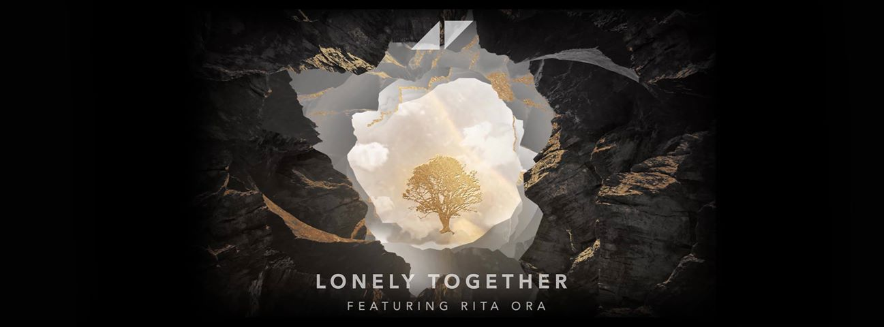
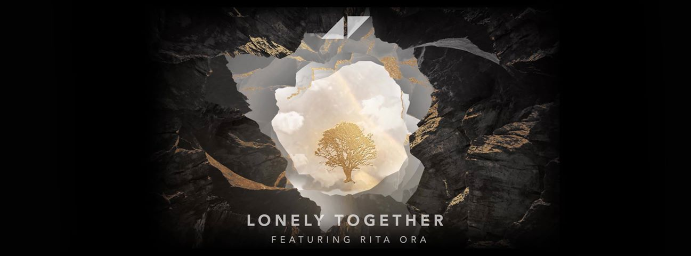
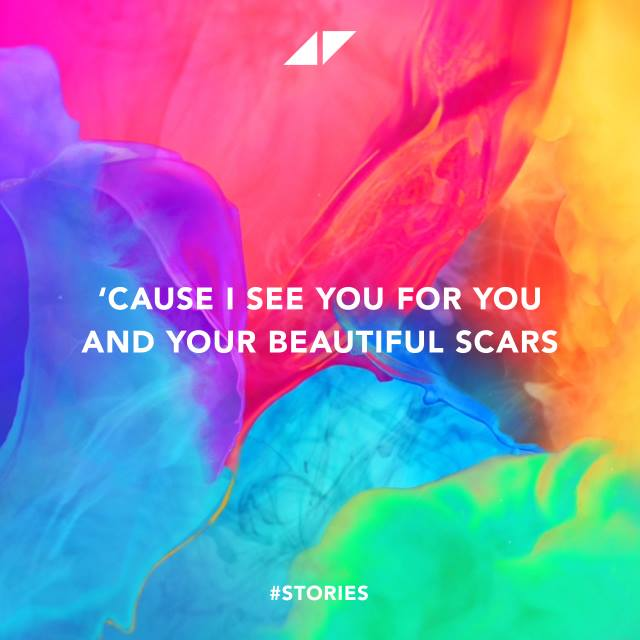
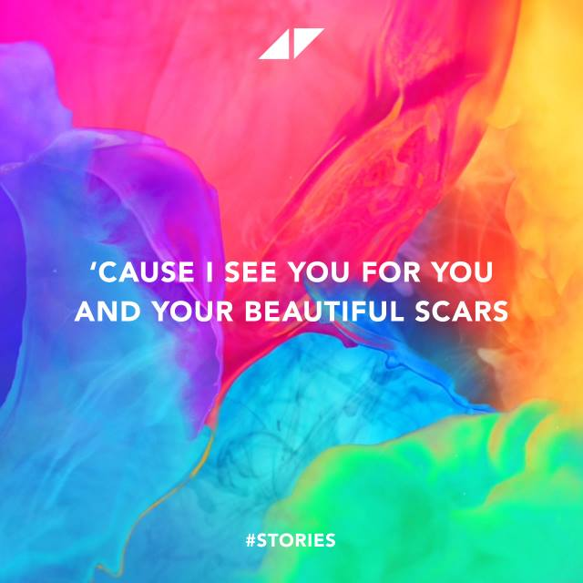

09.08.1987 - 04.20.2018
In loving memory
Tim Bergling, better known by his stagename, "Avicii," created music that brought people together from all over the world.
Early Life & Career
Tim Bergling was born in Stockholm on 8 September 1989, the son of Klas Bergling and actress Anki Lidén. He started mixing in his bedroom at the age of eight. Inspired by his brother, who was also a DJ, he began making music at the age of 16. In May 2007, Bergling signed on with the Dejfitts Plays label. He was a member of the Laidback Luke Forums, where he refined his craft and, at times, demonstrated his distinct deep house style. By 2009 to 2010, Bergling was a prolific producer and was releasing music incredibly quickly.
- 2011–2013: Levels
- 2013–2014: True
- 2014–2015: Stories
- 2016: Retirement from Touring
In October 2011, Bergling released "Levels", which launched him into the mainstream. "Levels" reached the top ten in Austria, Belgium, Bosnia, Croatia, Denmark, Finland, Germany, Greece, Ireland, Italy, the Netherlands, Slovenia and the United Kingdom, whilst topping the charts in Hungary, Norway and Sweden. In 2012, his collaboration track "Sunshine" with David Guetta was nominated for a Grammy award under the category for Best Dance Recording. On 23 March 2012, Bergling's unsigned single "Last Dance" was previewed on Pete Tong's show on BBC Radio 1. At Ultra Music Festival 2012 in Miami, he premiered two tracks, "Girl Gone Wild" (Avicii's UMF Remix) with Madonna and "Superlove" with Lenny Kravitz. After reaching two million followers on Facebook, Bergling released a new song titled "Two Million".
In March 2013, Bergling announced and premiered many new tracks from his new album True, which would later be set to be released in September, during his Main Stage set at Ultra Music Festival in Miami. The new tracks were experimental in nature. For example, Bergling brought out a stomping band to play through the new bluegrass-tinged song "Wake Me Up". On 21 March 2014, Bergling released a remixed edition of his album True titled True: Avicii By Avicii containing remixes by himself of all the tracks, excluding "Heart Upon My Sleeve" for unknown reasons. The promotion of this album was supposed to begin at the 2014 Ultra Music Festival, but Bergling announced he had been hospitalised on 28 March, and was unable to play his closing set at the festival.
In July 2014, Bergling told Rolling Stone that he had worked on 70 songs for his next album Stories, which would include collaborations with Jon Bon Jovi, Serj Tankian of System of a Down, Chris Martin, Wyclef Jean and Matisyahu. During his tour for True, he also performed his upcoming single "No Pleasing a Woman" with vocals from Billie Joe Armstrong of the American rock band Green Day. On 3 July 2015, Bergling previewed two tracks from his album Stories on episode 37 of his LE7ELS podcast: "Broken Arrows" featuring Zac Brown Band and "Can’t Catch Me" featuring Wyclef Jean and Matisyahu. A couple of weeks later, on 4 August 2015, it was announced that the final singles before the release of Stories would be "For a Better Day" featuring American singer Alex Ebert and "Pure Grinding" featuring vocals from Kristoffer Fogelmark and Earl St. Clair.
On 22 December 2016, a representative of Avicii Music AB had announced that Bergling had parted ways with long-time manager Ash Pournouri and At Night Management along with Ash's record label PRMD. The representative also announced that Bergling had signed on to Universal Music Sweden and was expected to release his third studio album in 2017.
Artistry

 



 


Passing
Bergling died on 20 April 2018 near Muscat at the age of 28. On 26 April, his family released an open letter stating:
"Our beloved Tim was a seeker, a fragile artistic soul searching for answers to existential questions. An over-achieving perfectionist who travelled and worked hard at a pace that led to extreme stress. When he stopped touring, he wanted to find a balance in life to be able to be happy and to do what he loved most – music. He really struggled with thoughts about Meaning, Life, Happiness. He could now not go on any longer. He wanted to find peace. Tim was not made for the business machine he found himself in; he was a sensitive guy who loved his fans but shunned the spotlight. Tim, you will forever be loved and sadly missed. The person you were and your music will keep your memory alive. We love you."
-The Family